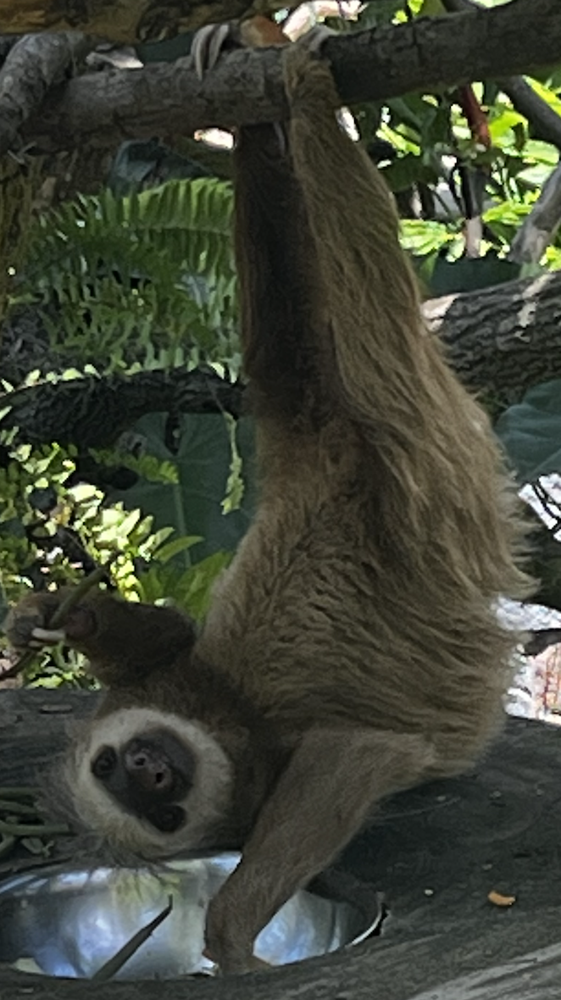

Home

The Nimble Sloth
There is little known about The Nimble Sloth. However, it has been discovered that this
creature loves to explore the wild outdoors and also finds time to keep up with the latest human
technology centered around web design, data structures, transformation and transmission.
Sloths are not typically found in the United States. However, on this rare occasion, The Nimble
Sloth was born and raised in one of the technical capital centers of the world, the San Francisco
Bay Area. When this sloth is not working with large corporations, solving all things related to
data transmission and enterprise software, you might spot this sloth in the wild at many live
concert venues, hiking trails and napping in his hammock or hot tub.